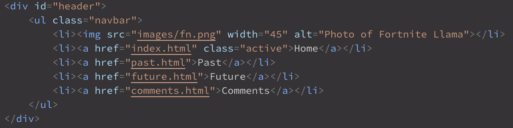
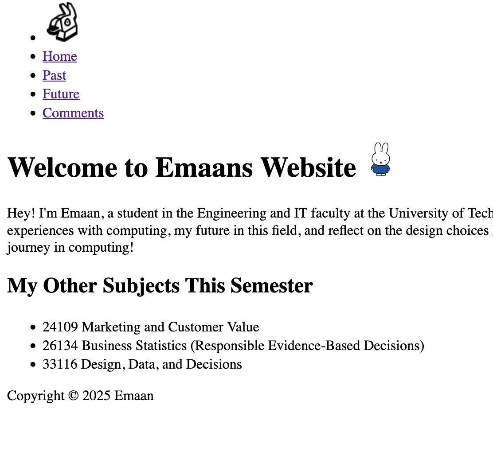

Comments
Overall Structure of the Website
The website consists of four main HTML pages:
- Home (index.html) - An introduction and overview.
- Past (past.html) - Highlights past experiences with computing and achievements.
- Future (future.html) - Outlines career goals and aspirations.
- Comments (comments.html) - An analysis of the site's structure and design.
Each page links to the others through a shared navigation bar, allowing users to switch easily between them. The structure is user-friendly and keeps all pages connected logically.
Internal Structure of Each Web Page
Header (<div id="header">)

- Contains a horizontal navigation menu.
- Includes a small image (Fortnite Llama) and links to each of the main pages.
- Navigation uses the
.navbarclass for layout and styling.
Content Section (<div id="content">)
- Holds the unique content of each page.
- Uses
id="content"to apply consistent width and padding. - Includes structured content with headings (
<h1>,<h2>), paragraphs, lists, and images.
Footer (<div id="footer">)
- Appears at the bottom of every page.
- Contains copyright.
- Styled with a dark background and centered text.
Why it matters: This structure separates content clearly and makes the site easy to read, navigate, and maintain. It also supports accessibility and responsiveness across different devices.
Styles Used
All styling is handled in the websystems.css file. Here's a summary of key styles:
| Selector | Type | Purpose | Where It's Used |
|---|---|---|---|
| body | Element | Sets background, font, and spacing | All pages |
| h1, h2 | Element | Sets heading color | Throughout the site |
| .navbar | Class | Styles the navigation bar | In the header |
| .navbar a:hover | Class | Adds hover effect to nav links | Navigation bar |
| .navbar a.active | Class | Highlights current page in nav | Navigation bar |
| div#content | ID | Adds padding and width to main content | All pages |
| div#footer | ID | Styles the footer (background, color, text) | Bottom of all pages |
| div.newsitem | Class | Adds a border and background to content box | Optional content styling |
| table.data | Class | Styles data tables with alternating rows | On the Past page |
| span.date | Element/Class | Styles dates in green and bold | News items or timelines |
Navigation
A horizontal nav bar stays consistent across all pages.
Hover and active styles give users feedback when navigating.
Accessibility Considerations
Use of <alt> Tags
All images include meaningful alt tags.
Example:<img src="images/fn.png" alt="Photo of Fortnite Llama">
This helps screen reader users understand visual content.
Font Size and Spacing
The font is readable with sufficient padding and spacing around elements to avoid clutter.
Colour Contrast
Dark text on light backgrounds ensures high readability. Purple elements are used sparingly and do not reduce visibility.
How the Site Works Without CSS
If CSS is disabled, the website remains fully functional, as all content is structured with proper HTML semantics (headings, paragraphs, lists, etc.). While the styling is removed, the navigation bar and text remain accessible and readable. This ensures usability across different browsing environments.
